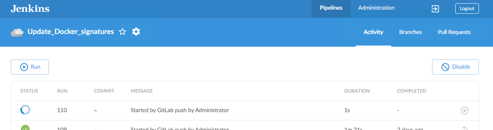
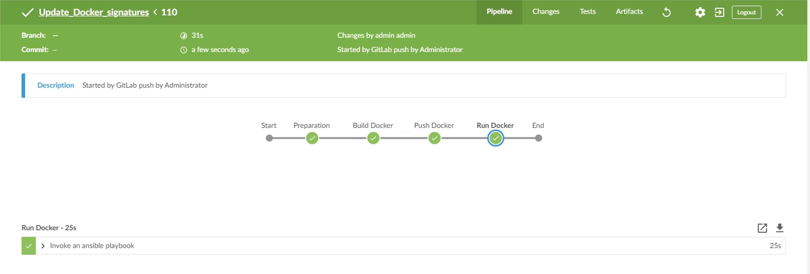
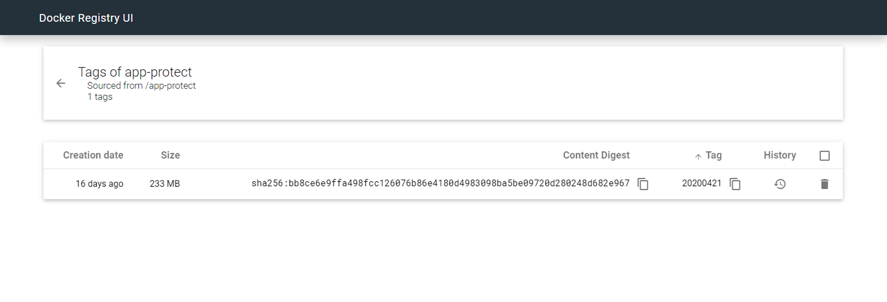

Step 8 - Deploy NAP with a CI/CD toolchain¶
In this module, we will deploy deploy NAP with a CI/CD pipeline. NAP is tied to the app, so when DevOps commits a new app (or a new version), the CI/CD pipeline has to deploy a new NAP component in front. In order to avoid repeating what we did previously, we will use a Signature package update as a trigger.
Note
When a new signature package is available, the CI/CD pipeline will build a new version of the Docker image and run it in front of Arcadia Application
This is the workflow we will run
- Upload a new Signature Package in GitLab
- Commit this upload in GitLab
- This commit triggers a webhook in Jenkins
- Jenkins runs the pipeline
- Build a new Docker NAP image with a new tag
date of the signature package- Destroy the previous running NAP container
- Run a new NAP container with this new Signature Package
Note
Goal of this module is not to learn how to do it, but understand how I did it.
Check the Jenkins file
node {
def mvnHome
stage('Preparation') {
// Get some code from a GitHub repository
git 'http://10.1.20.4/nginx-app-protect/signature-update.git'
}
stage('Build Docker') {
withEnv(["MVN_HOME=$mvnHome"]) {
// Define the remote docker registry
registry = "10.1.20.7:5000/app-protect"
// Extract the tag from the date of the Signature Package
tag = sh (script: 'echo -n app-protect-attack-signatures-* | cut -c 31-38', returnStdout: true).trim()
echo "${tag}"
script {
// Build the docker image
docker.build registry + ":${tag}"
}
}
}
stage('Push Docker') {
withEnv(["MVN_HOME=$mvnHome"]) {
// Push the image into the remote Docker registry
sh "sudo docker push 10.1.20.7:5000/app-protect:${tag}"
}
}
stage name: 'Run Docker', concurrency: 1
withEnv(["MVN_HOME=$mvnHome"]) {
// Run the docker container
ansiblePlaybook inventory: 'hosts',
playbook: 'playbook.yaml',
extraVars: [dockertag: "${tag}"]
}
}
Note
The challenge here was to retrieve the date of the package and tag the image with this date in order to have one image per signature package date. This is useful if you need to roll back to a previous version of the signatures.
Upload a new signature package in GitLab
Steps:
RDP to the Jumphost and open
Chrome
- Open 2 tabs
Dashboard [Jenkins]andGitlab
- If Jenkins is not available (502 error), restart the GitLab Docker container. SSH to the GitLab VM and run
docker restart gitlabIn Jenkins, open
Update_Docker_SignaturespipelineIn GitLab, open
NGINX App Protect / signature-updateprojectIn the GitLab project, click on the
+icon andupload file
- Select Signature Package file from the Desktop > NGINX Signatures Packages
- If you can’t click on
click to upload, this is a bug in GitLab- Workaround is to simulate the creation of a file. Close this upload window, click on
+iconNew file, enter anything in the name and clickCancel- Try to upload the file again, it should work.
Upload the file
app-protect-attack-signatures-20200421-1.el7.centos.x86_64.rpmwith the date of April 21st, 2020. Date is in the name of the file
{kind=link}
{kind=link}
{kind=link}
Trigger the CI/CD pipeline
Steps :
In GitLab, click on
Tagsin the left menuCreate a new tag and give it the name
Sig-20200421Click
Create tagAt this moment, the Jenkins pipeline starts (thanks to a webhook between GitLab and Jenkins)
In Chrome on the Jenkins tab, you should see a new
RUN, click on itWait for the pipeline to finish. You can click on every task to check the steps

- Check if the new image created and pushed by the pipeline is available in the Docker Registry.

- In
Chromeopen bookmarkDocker Registry UI- Click on
App ProtectRepository- You can see your new image with the tag
20200421Connect in SSH to the Docker App Protect + Docker repo VM, and check the signature package date running
docker exec -it app-protect more /var/log/nginx/error.log.2020/05/24 20:49:39 [notice] 12#12: APP_PROTECT { "event": "configuration_load_success", "attack_signatures_package":{"revision_datetime":"2020-04-21T10:43:02Z","version":"2020.04.21"},"completed_successfully":true}
Note
Congratulations, you ran a CI/CD pipeline based on a GitLab webhook. This webhook was based on a Signature Package update, but it could have also been associated with an application commit.
Video of this module (force HD 1080p in the video settings)